Papers
- ImageNet Classification with Deep Convolutional Neural Networks (Krizhevsky, et al., 2014). AlexNet.
- Very Deep Convolutional Networks for large-scale image recognition (Simonyan, et al., 2014). Image classification.
- Improving neural networks by preventing co-adaptation of feature detectors. Dropout and regularization.
- FaceNet: A Unified Embedding for Face Recognition and Clustering (Schroff, et al., 2015). Metric learning (FaceNet).
- Deep Residual Learning for Image Recognition (He, et al., 2015). Very deep networks (ResNet).
- Neural Machine Translation by jointly learning to align and translate (Bahdanau, et al., 2015). RNNs, LSTMs, GRUs - machine translation with alignment.
- Deep structured output learning for unconstrained text recognition (Jaderberg, et al., 2014). Text recognition.
- Deep Speech 2: End-to-End Speech Recognition in English and Mandarin (Amodei, et al., 2015). Speech recognition (DeepSpeech 2).
- A Neural Algorithm of Artistic Style (Gatys, et al., 2015). Artistic style transfer.
- Neural GPUs learn algorithms (Kaiser, et al., 2015). A Neural GPUs.
- AI2: Training a big data machine to defend (Kalyan, et al., 2016).
- Tensor Flow Whitepaper, (Abadi, et al., 2014).
- Torchnet: An Open-Source Platform for (Deep) Learning Research, (Collobert, et al., 2016).
Interesting to see the relation between 1998's LeCun 10^6 transistors and 10^7 pixels in training and then 2012's Krizhevsky 10^9 transistors (and GPU) and 10^14 pixels in training.
Articles
- Using Keras and Deep Q-Network to Play FlappyBird. Hands-on on Google DeepMind's Deep Q-Network.
- Neural Networks, Manifolds, and Topology. This is a 2-years-old article, but a very well-written high-level explanation of the topology of low-dimensional NNs. "The task of a classification algorithm is fundamentally to separate a bunch of tangled manifolds."
- Calculus on Computational Graphs: Backpropagation. Backpropagation explaned in a very well-written text.
- Understanding LSTM Networks. Another hit :).
- Visualizing Representations: Deep Learning and Human Beings. Another Christopher Olah's great post, now on NN's different layers representations, tanging some philosophic aspects of it.
- Karpathy's t-SNE visualization of CNN codes. He takes the 50k ILSVRC 2012 validation images, extracts the 4096-dimensional fc7 CNN features using Caffe and then uses Barnes-Hut t-SNE to compute a 2-dimensional embedding that respects the high-dimensional (L2) distances.
- NVIDIA's Accelerating AI with GPUs: A New Computing Model.
- Torchnet: Lighting the way to deep machine learning. "Torchnet is different from frameworks such as Caffe, Chainer, TensorFlow, and Theano, in that it does not focus on performing efficient inference and gradient computations in deep networks. Instead, Torchnet provides a framework on top of a deep learning framework that makes rapid experimentation easier."
Talks
Tools
Videos
<3
-
Remember that the hidden layer learns a representation so that the data is linearly separable, so that's is how you do separate a spiral two-dimensional dataset using Tensorflow playground and Convnetjs:
With tanh:
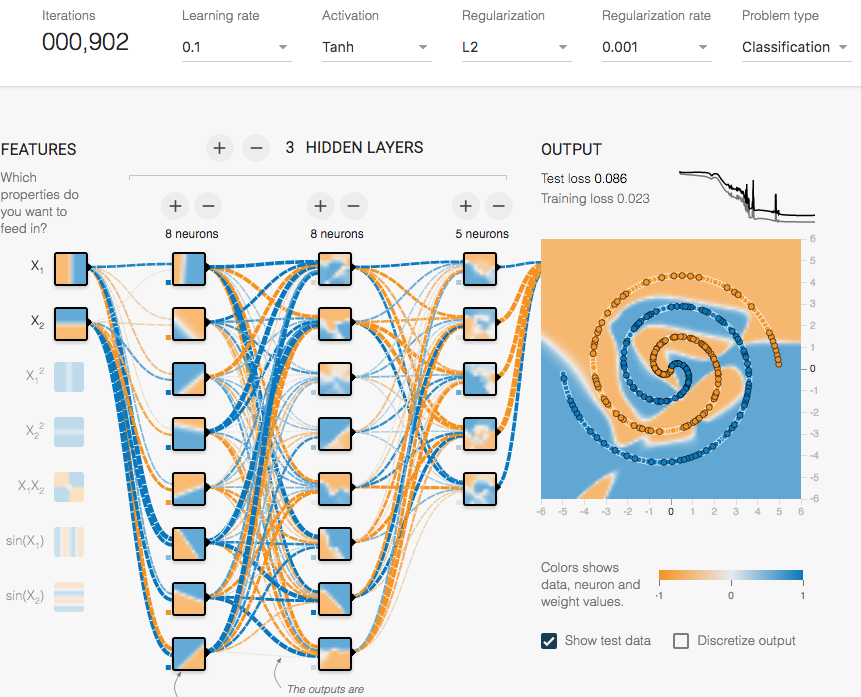 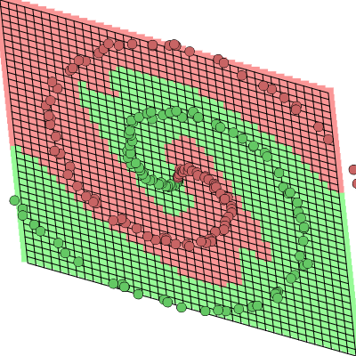 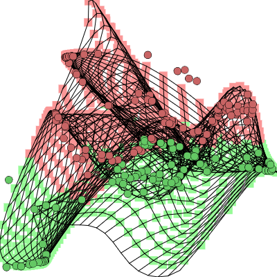 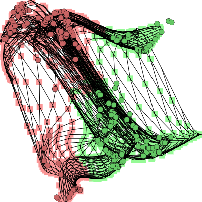
With ReLU:
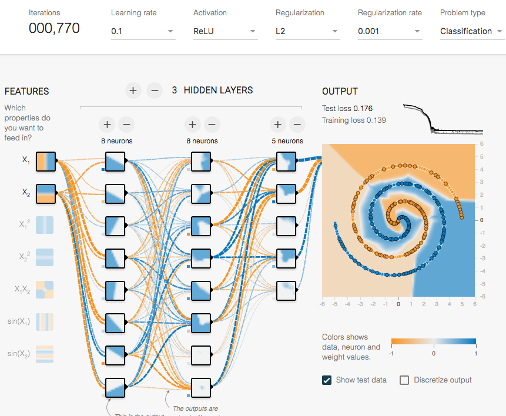
- That's is how you do not separate a spiral two-dimensional dataset:
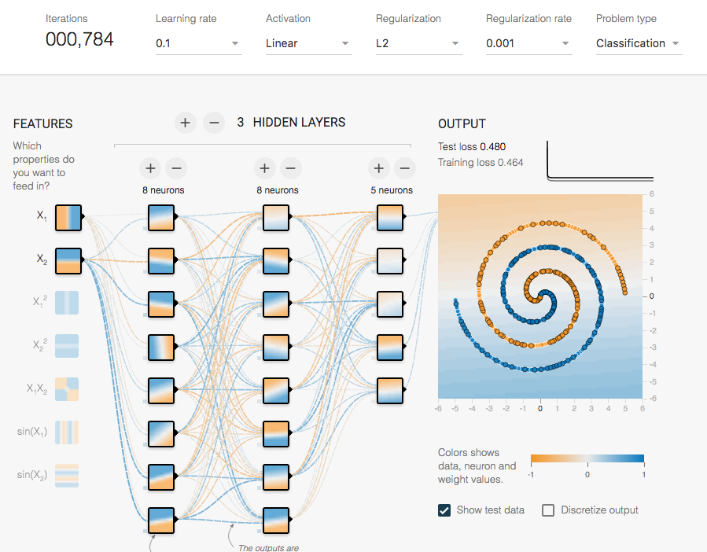 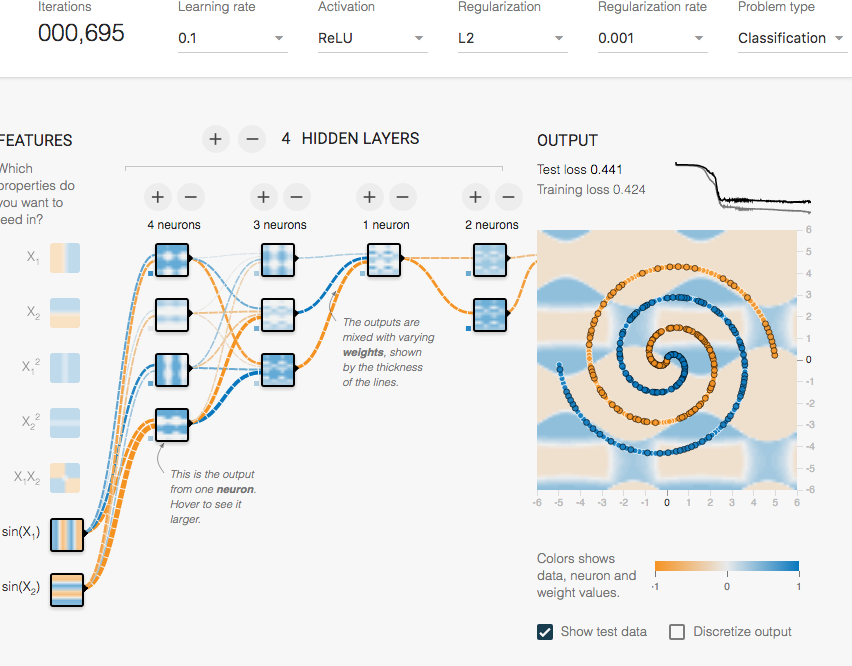 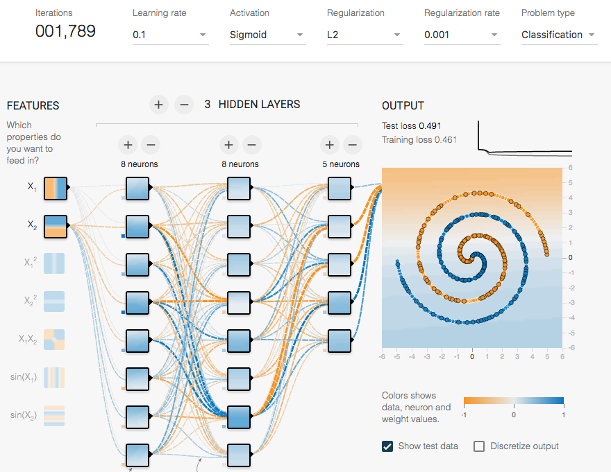 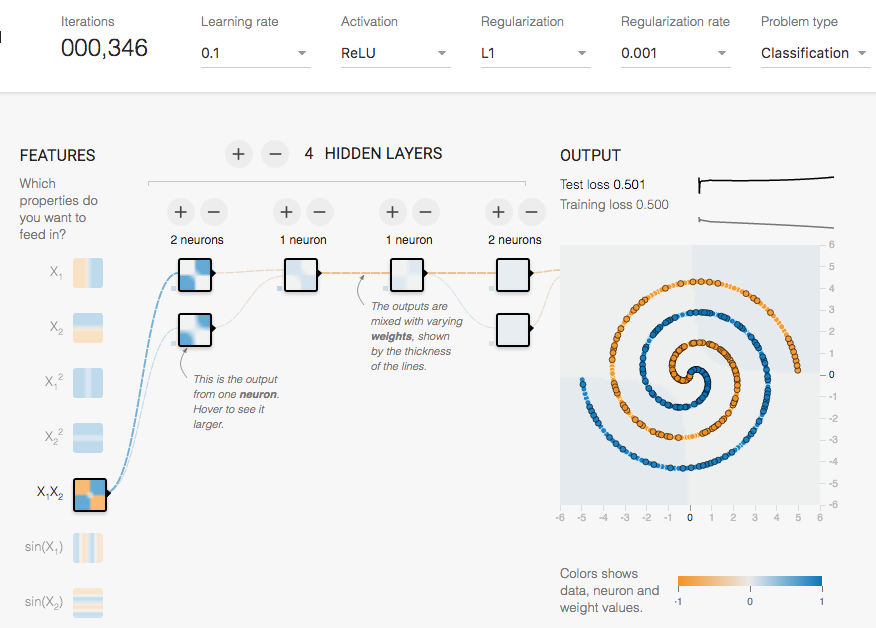 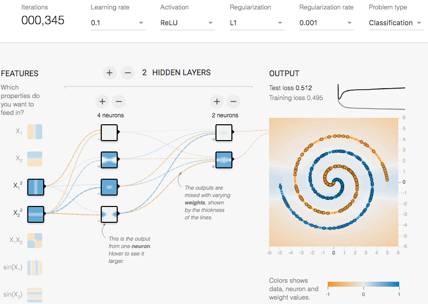 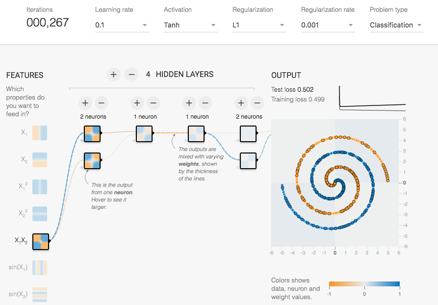
Comments !